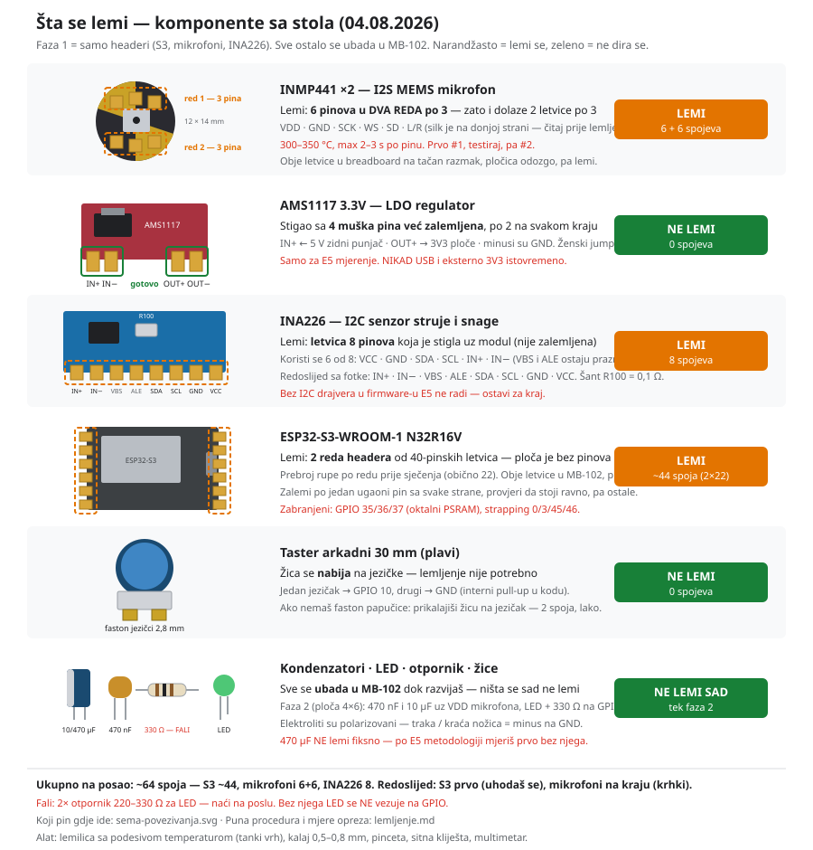
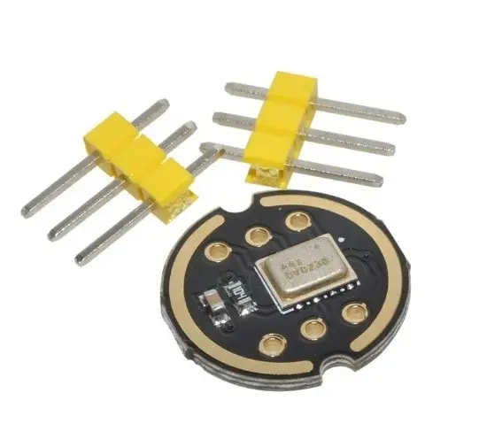
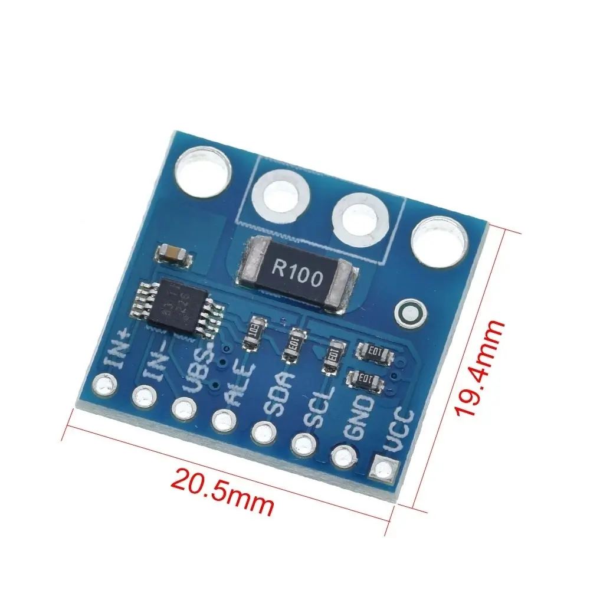
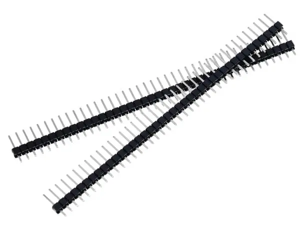
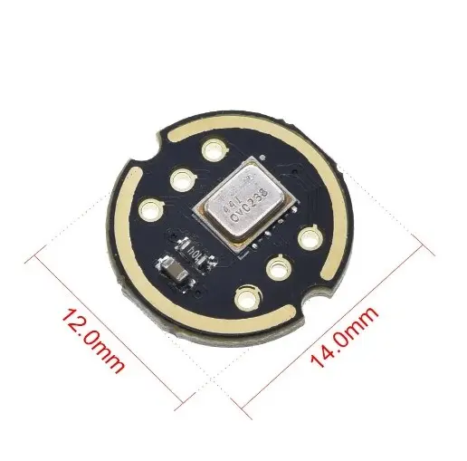
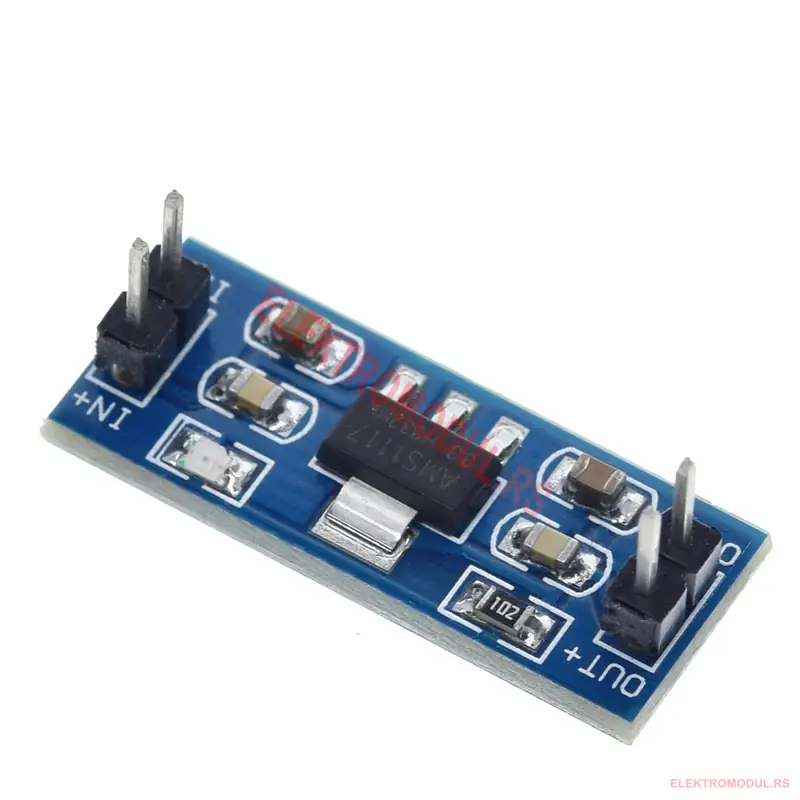
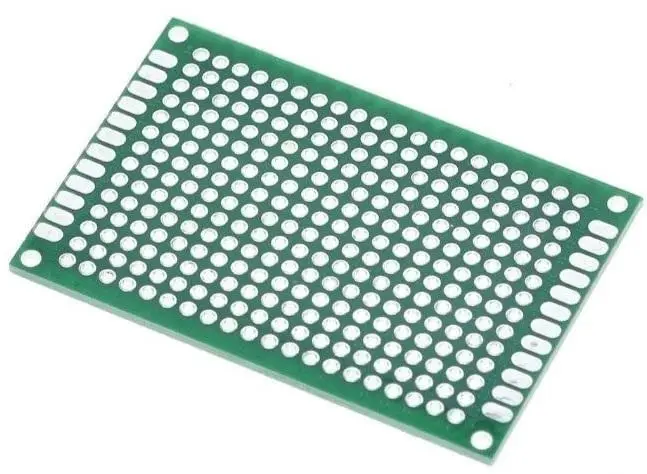
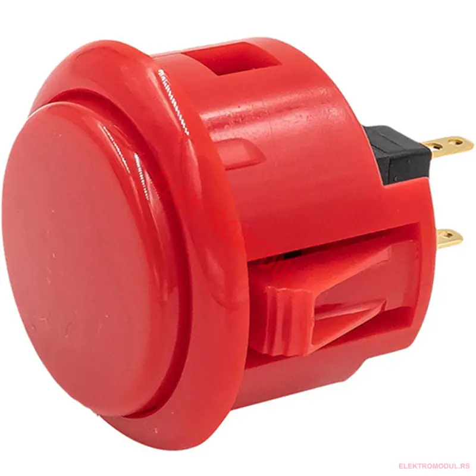
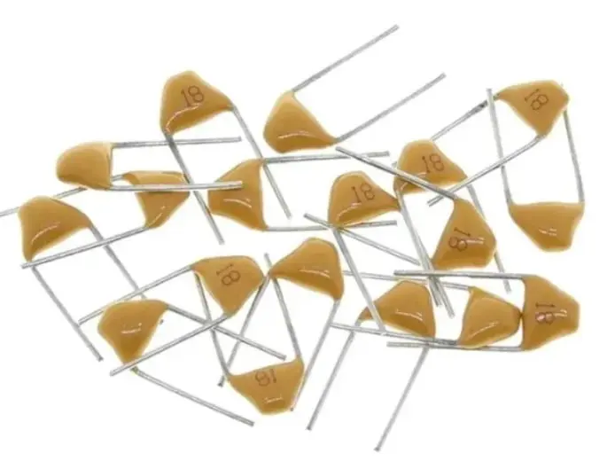
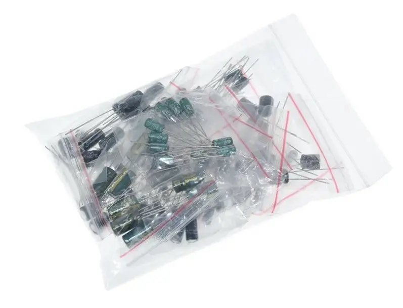

| Komponenta | Kako je stiglo | Lemi? | Spojeva |
|---|---|---|---|
| ESP32-S3 | bez pinova, idu 40-pinske letvice | DA | ~44 (2×22) |
| INMP441 ×2 | 6 rupa u 2 reda po 3 + 2 letvice po 3 pina | DA | 6 + 6 |
| INA226 | 8 rupa u jednom redu + letvica od 8 | DA | 8 |
| AMS1117 3.3V | 4 muška pina već zalemljena | NE | 0 |
| Taster arkadni | faston jezičci 2,8 mm | NE | 0 |
| Kondenzatori, LED, otpornik | nožice | NE sad | 0 |
| Ploča 4×6 | prazna | NE sad | 0 |
Ukupno ~64 spoja. Računaj 1,5–2 h mirnog rada.



Plus ESP32-S3 ploču. Sve ostalo ostaje kod kuće.
Pinovi su fiksirani u pins.h:
4 BCLK · 5 WS · 6 SD · 8 SDA · 9 SCL · 2 LED · 10 taster.
Zabranjeni: GPIO 35/36/37 (oktalni PSRAM), strapping 0/3/45/46.

Okrugla pločica 12×14 mm. Rupe nisu u jednom redu — 3 gore, 3 dolje. Zato i dolaze dvije letvice po 3 pina. Obje ubodi u breadboard na tačan razmak, nasloni pločicu odozgo, pa lemi.
| Pin mikrofona | Ide na S3 |
|---|---|
| VDD | 3V3 |
| GND | GND |
| SCK | GPIO 4 |
| WS | GPIO 5 |
| SD | GPIO 6 |
| L/R | GND — obavezno |
Silk redoslijed sa fotke, slijeva nadesno:
IN+ · IN− · VBS · ALE · SDA · SCL · GND · VCC
Šant je R100 = 0,1 Ω — piše na komponenti, ne moraš mjeriti. Zalemi svih 8 zbog stabilnosti, priključuješ 6:
| Pin | Ide na |
|---|---|
| VCC | 3V3 |
| GND | GND |
| SDA | GPIO 8 |
| SCL | GPIO 9 |
| IN+ | dolazi 5 V sa izvora |
| IN− | ide dalje na potrošač (ESP32) |
| VBS, ALE | ostaju prazni |

Ima 4 muška pina već zalemljena, po 2 na svakom kraju:
IN+ / IN− na jednoj strani, OUT+ / OUT− na drugoj. Minusi su GND.
Ženski jumper ide direktno.
IN+ ← 5 V zidni punjač · OUT+ → 3V3 ploče · minusi zajednički GND.

Za sad ništa — ostavi je u kesi. To je faza 2, finalni zalemljeni sklop za odbranu.
To je breadboard koji se ne raspada: ista mreža rupa na 2.54 mm, ali svaka rupa je sama za sebe — ništa nije unaprijed povezano. Ubodeš komponentu, zalemiš je, pa ti sam praviš svaku vezu žicom sa donje strane ili kalajnim mostom. Po ivicama ima izdužene padove za konektore.
Zašto uopšte: (1) kad nosiš sklop na odbranu, breadboard se strese u torbi i jumper ispadne; (2) I2S linije sa dugim jumperima hvataju šum.



| Šta | Kom | Zašto |
|---|---|---|
| Otpornik 220–330 Ω (1/4 W) | 2 | Obavezno — bez njega LED ne ide na GPIO, spržiš pin |
| Keramika 100 nF X7R | 2–3 | Opciono — datasheet-tačna vrijednost za mikrofon (bolja od 470 nF) |
| Ženski header 2.54 mm | 1 | Opciono — da INMP441 ostane vadiv na ploči 4×6 |
| Lemilica sa podesivom temp., tanki vrh | — | 300–350 °C |
| Kalaj 0,5–0,8 mm, pinceta, kliješta, multimetar | — | Multimetar je obavezan za bring-up |
0. Na poslu: headeri na S3 (~44), INA226 (8), pa mikrofoni (6+6) 1. Kod kuće: ubodi S3 u MB-102, flešuj — provjeri da se ploča i dalje javlja 2. Spoji INMP441 na S3 (4/5/6, VDD/GND, L/R→GND) 3. TEST: snimi 5 s WAV na flash → Audacity ← ovdje se vidi je li mikrofon živ 4. Eval mod (taster pri bootu) → klipovi s flasha 5. Živi rad → LED reaguje 6. INA226 + AMS1117 → E5, tek poslije I2C drajvera 7. NA KRAJU: sve na ploču 4×6 (faza 2)
Slike komponenti: elektromodul.rs, preuzete za internu dokumentaciju (repo je privatan).